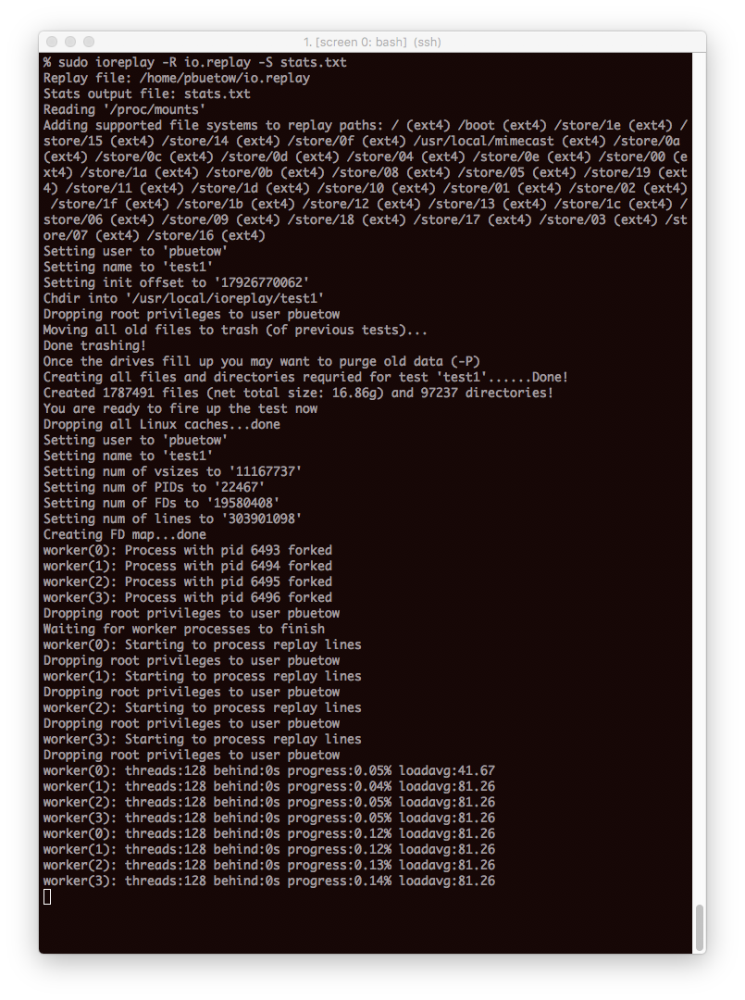
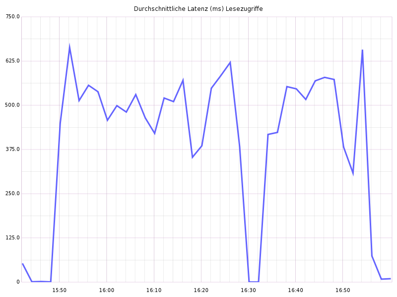
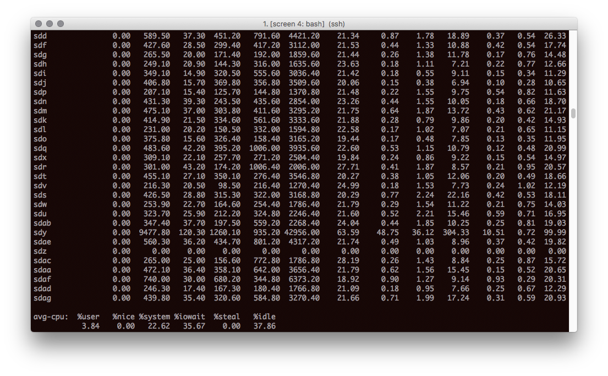

.---.
/ \
\.@-@./
/`\_/`\
// _ \\
| \ )|_
/`\_`> <_/ \
jgs\__/'---'\__/
Written by Paul Buetow 2018-06-01, last updated 2021-05-08
This text first was published in the german IT-Administrator computer Magazine. 3 years have passed since and I decided to publish it on my blog too.
https://www.admin-magazin.de/Das-Heft/2018/06/Realistische-Lasttests-mit-I-O-RiotI havn't worked on I/O Riot for some time now, but all what is written here is still valid. I am still using I/O Riot to debug I/O issues and pattern once in a while, so by all means the tool is not obsolete yet. The tool even helped to resolve a major production incident at work involving I/O.
I am eagerly looking forward to revamp I/O Riot so that it uses the new BPF Linux capabilities instead of plain old Systemtap (or alternatively: Newer versions of Systemtap can also use BPF as the backend I have learned). Also, when I wrote I/O Riot initially, I didn't have any experience with the Go programming language yet and therefore I wrote it in C. Once it gets revamped I might consider using Go instead of C as it would spare me from many segmentation faults and headaches during development ;-). I might also just stick to C for plain performance reasons and just refactor the code dealing with concurrency.
Pleace notice that some of the screenshots show the command "ioreplay" instead of "ioriot". That's because the name has changed after taking those.
With I/O Riot IT administrators can load test and optimize the I/O subsystem of Linux-based operating systems. The tool makes it possible to record I/O patterns and replay them at a later time as often as desired. This means bottlenecks can be reproduced and eradicated.
When storing huge amounts of data, such as more than 200 billion archived emails at Mimecast, it's not only the available storage capacity that matters, but also the data throughput and latency. At the same time, operating costs must be kept as low as possible. The more systems involved, the more important it is to optimize the hardware, the operating system and the applications running on it.
Conventional I/O benchmarking: Administrators usually use open source benchmarking tools like IOZone and bonnie++. Available database systems such as Redis and MySQL come with their own benchmarking tools. The common problem with these tools is that they work with prescribed artificial I/O patterns. Although this can test both sequential and randomized data access, the patterns do not correspond to what can be found on production systems.
Testing by load test environment: Another option is to use a separate load test environment in which, as far as possible, a production environment with all its dependencies is simulated. However, an environment consisting of many microservices is very complex. Microservices are usually managed by different teams, which means extra coordination effort for each load test. Another challenge is to generate the load as authentically as possible so that the patterns correspond to a productive environment. Such a load test environment can only handle as many requests as its weakest link can handle. For example, load generators send many read and write requests to a frontend microservice, whereby the frontend forwards the requests to a backend microservice responsible for storing the data. If the frontend service does not process the requests efficiently enough, the backend service is not well utilized in the first place. As a rule, all microservices are clustered across many servers, which makes everything even more complicated. Under all these conditions it is very difficult to test I/O of separate backend systems. Moreover, for many small and medium-sized companies, a separate load test environment would not be feasible for cost reasons.
Testing in the production environment: For these reasons, benchmarks are often carried out in the production environment. In order to derive value from this such tests are especially performed during peak hours when systems are under high load. However, testing on production systems is associated with risks and can lead to failure or loss of data without adequate protection.
For email archiving, Mimecast uses an internally developed microservice, which is operated directly on Linux-based storage systems. A storage cluster is divided into several replication volumes. Data is always replicated three times across two secure data centers. Customer data is automatically allocated to one or more volumes, depending on throughput, so that all volumes are automatically assigned the same load. Customer data is archived on conventional, but inexpensive hard disks with several terabytes of storage capacity each. I/O benchmarking proved difficult for all the reasons mentioned above. Furthermore, there are no ready-made tools for this purpose in the case of self-developed software. The service operates on many block devices simultaneously, which can make the RAID controller a bottleneck. None of the freely available benchmarking tools can test several block devices at the same time without extra effort. In addition, emails typically consist of many small files. Randomized access to many small files is particularly inefficient. In addition to many software adaptations, the hardware and operating system must also be optimized.
Mimecast encourages employees to be innovative and pursue their own ideas in the form of an internal competition, Pet Project. The goal of the pet project I/O Riot was to simplify OS and hardware level I/O benchmarking. The first prototype of I/O Riot was awarded an internal roadmap prize in the spring of 2017. A few months later, I/O Riot was used to reduce write latency in the storage clusters by about 50%. The improvement was first verified by I/O replay on a test system and then successively applied to all storage systems. I/O Riot was also used to resolve a production incident related to disk I/O load.
First, all I/O events are logged to a file on a production system with I/O Riot. It is then copied to a test system where all events are replayed in the same way. The crucial point here is that you can reproduce I/O patterns as they are found on a production system as often as you like on a test system. This results in the possibility of optimizing the set screws on the system after each run.
I/O Riot was tested under CentOS 7.2 x86_64. For compiling, the GNU C compiler and Systemtap including kernel debug information are required. Other Linux distributions are theoretically compatible but untested. First of all, you should update the systems involved as follows:
% sudo yum update
If the kernel is updated, please restart the system. The installation would be done without a restart but this would complicate the installation. The installed kernel version should always correspond to the currently running kernel. You can then install I/O Riot as follows:
% sudo yum install gcc git systemtap yum-utils kernel-devel-$(uname -r) % sudo debuginfo-install kernel-$(uname -r) % git clone https://github.com/mimecast/ioriot % cd ioriot % make % sudo make install % export PATH=$PATH:/opt/ioriot/bin
Note: It is not best practice to install any compilers on production systems. For further information please have a look at the enclosed README.md.
All I/O events are kernel related. If a process wants to perform an I/O operation, such as opening a file, it must inform the kernel of this by a system call (short syscall). I/O Riot relies on the Systemtap tool to record I/O syscalls. Systemtap, available for all popular Linux distributions, helps you to take a look at the running kernel in productive environments, which makes it predestined to monitor all I/O-relevant Linux syscalls and log them to a file. Other tools, such as strace, are not an alternative because they slow down the system too much.
During recording, ioriot acts as a wrapper and executes all relevant Systemtap commands for you. Use the following command to log all events to io.capture:
% sudo ioriot -c io.captureScreenshot I/O recording:
A Ctrl-C (SIGINT) stops recording prematurely. Otherwise, ioriot terminates itself automatically after 1 hour. Depending on the system load, the output file can grow to several gigabytes. Only metadata is logged, not the read and written data itself. When replaying later, only random data is used. Under certain circumstances, Systemtap may omit some system calls and issue warnings. This is to ensure that Systemtap does not consume too many resources.
Then copy io.capture to a test system. The log also contains all accesses to the pseudo file systems devfs, sysfs and procfs. This makes little sense, which is why you must first generate a cleaned and playable version io.replay from io.capture as follows:
% sudo ioriot -c io.capture -r io.replay -u $USER -n TESTNAME
The parameter -n allows you to assign a freely selectable test name. An arbitrary system user under which the test is to be played is specified via paramater -u.
The test will most likely want to access existing files. These are files the test wants to read but does not create by itself. The existence of these must be ensured before the test. You can do this as follows:
% sudo ioriot -i io.replay
To avoid any damage to the running system, ioreplay only works in special directories. The tool creates a separate subdirectory for each file system mount point (e.g. /, /usr/local, /store/00,...) (here: /.ioriot/TESTNAME, /usr/local/.ioriot/TESTNAME, /store/00/.ioriot/TESTNAME,...). By default, the working directory of ioriot is /usr/local/ioriot/TESTNAME.
Screenshot test preparation:
You must re-initialize the environment before each run. Data from previous tests will be moved to a trash directory automatically, which can be finally deleted with "sudo ioriot -P".
After initialization, you can replay the log with -r. You can use -R to initiate both test initialization and replay in a single command and -S can be used to specify a file in which statistics are written after the test run.
You can also influence the playback speed: "-s 0" is interpreted as "Playback as fast as possible" and is the default setting. With "-s 1" all operations are performed at original speed. "-s 2" would double the playback speed and "-s 0.5" would halve it.
Screenshot replaying I/O:As an initial test, for example, you could compare the two Linux I/O schedulers CFQ and Deadline and check which scheduler the test runs the fastest. They run the test separately for each scheduler. The following shell loop iterates through all attached block devices of the system and changes their I/O scheduler to the one specified in variable $new_scheduler (in this case either cfq or deadline). Subsequently, all I/O events from the io.replay protocol are played back. At the end, an output file with statistics is generated:
% new_scheduler=cfq
% for scheduler in /sys/block/*/queue/scheduler; do
echo $new_scheduler | sudo tee $scheduler
done
% sudo ioriot -R io.replay -S cfq.txt
% new_scheduler=deadline
% for scheduler in /sys/block/*/queue/scheduler; do
echo $new_scheduler | sudo tee $scheduler
done
% sudo ioriot -R io.replay -S deadline.txt
According to the results, the test could run 940 seconds faster with Deadline Scheduler:
% cat cfq.txt Num workers: 4 hreads per worker: 128 otal threads: 512 Highest loadavg: 259.29 Performed ioops: 218624596 Average ioops/s: 101544.17 Time ahead: 1452s Total time: 2153.00s % cat deadline.txt Num workers: 4 Threads per worker: 128 Total threads: 512 Highest loadavg: 342.45 Performed ioops: 218624596 Average ioops/s: 180234.62 Time ahead: 2392s Total time: 1213.00s
In any case, you should also set up a time series database, such as Graphite, where the I/O throughput can be plotted. Figures 4 and 5 show the read and write access times of both tests. The break-in makes it clear when the CFQ test ended and the deadline test was started. The reading latency of both tests is similar. Write latency is dramatically improved using the Deadline Scheduler.
Graphite visualization of the mean read access times in ms with CFQ and Deadline Scheduler.:You should also take a look at the iostat tool. The iostat screenshot shows the output of iostat -x 10 during a test run. As you can see, a block device is fully loaded with 99% utilization, while all other block devices still have sufficient buffer. This could be an indication of poor data distribution in the storage system and is worth pursuing. It is not uncommon for I/O Riot to reveal software problems.
Output of iostat. The block device sdy seems to be almost fully utilized by 99%.:The tool has already proven to be very useful and will continue to be actively developed as time and priority permits. Mimecast intends to be an ongoing contributor to Open Source. You can find I/O Riot at:
https://github.com/mimecast/ioriotSystemtap is a tool for the instrumentation of the Linux kernel. The tool provides an AWK-like programming language. Programs written in it are compiled from Systemtap to C- and then into a dynamically loadable kernel module. Loaded into the kernel, the program has access to Linux internals. A Systemtap program written for I/O Riot monitors when, with which parameters, at which time, and from which process I/O syscalls take place and their return values.
For example, the open syscall opens a file and returns the responsible file descriptor. The read and write syscalls can operate on a file descriptor and return the number of read or written bytes. The close syscall closes a given file descriptor. I/O Riot comes with a ready-made Systemtap program, which you have already compiled into a kernel module and installed to /opt/ioriot. In addition to open, read and close, it logs many other I/O-relevant calls.
https://sourceware.org/systemtap/E-Mail me your thoughts at comments@mx.buetow.org!
Go back to the main site